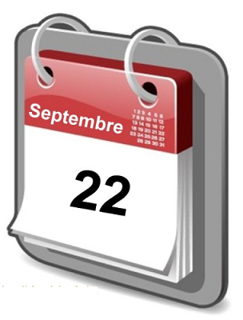

|
 Brassens chante "Le 22 septembre" (avec P. Nicolas et J. Favereau |

|
1. On a twenty-second Of September you left me And since then, every year, On that anniversary, I wet my handkerchief In memory of you ... Now, here we are again, However I am placid, With not a single tear To drench my parched eyelid: At that twenty-second Day I scoff. Yes I do. 2. No more shall we see at The time of falling leaves, This soul in pain which re- -sembles me and whom grieves The decay of each leaf In memory of you ... Dear Prévert, you must go (1) With your snails into mourning, Without my assistance Do the dead leaves burying At that twenty-second Day I scoff. Yes I do. 3. In former times my arms, Like a pair of wings, opened: I went up to the sky, Birdlike, and would have broken My neck and all my bones In memory of you ... The complex of Icarus Is fully forgotten And the leaving swallows No more usher in autumn At that twenty-second Day I scoff. Yes I do. 4. Piously knotted were With a piece of your laces, Hanging on my window, Some everlasting flowers Which I watered with tears In memory of you ... Now I will lay them on The first grave in the churchyard, Regrets lasting forever From now on I discard: At that twenty-second Day I scoff. Yes I do. 5. From now on, the little bit of Heart thats left to me Will not celebrate The fateful equinox, nor be On the blink, on that day, In memory of you ... It spat out its flame and Is no more glowing ember; Its hardly hot enough For making warm a fender: At that twenty-second Day I scoff. Yes I do. It's sad not to be sad Anymore without you! (2) Transl. Christian Souchon (c) 2017
(1) Jacques Prévert wrote a poem Burial of a dead leaf: Two snails went to the burial of a dead leaf. They had black shells with crêpe on the horns. They left in the evening, a beautiful evening in autumn
(2) Michel Galiana wrote something similar: Les funérailles de l'amour
(3) Michel Galiana a aussi parlé de l'amour qui s'éteint: Les funérailles de l'amour
|
 Brassens chante "Le 22 septembre" (avec P. Nicolas et J. Favereau |